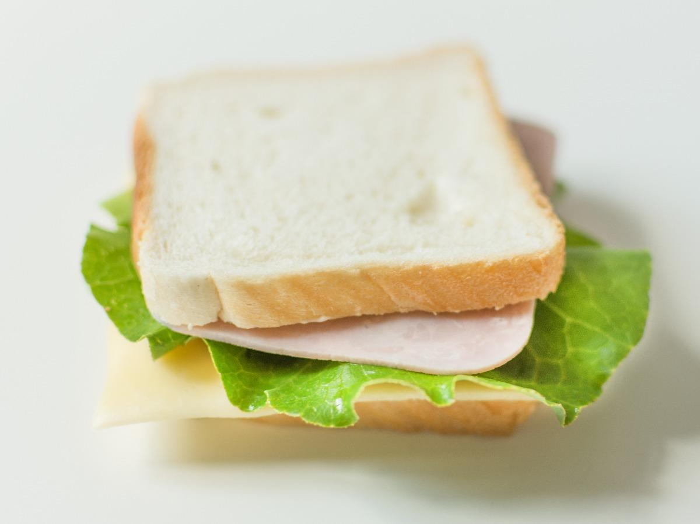

A Simple Ham Sandwich

A delicious and nutritious ham sandwhich.
This is pretty basic, but healthfully filling if you include fruit (tomato) and greens. You'll need:
- 2 oz thin-sliced ham
- One tablespoon mayonnaise
- One tablespoon dijon mustard
- One small tomato
- Favorite leafy greens
- Whole grain bread
Steps:
- Slice the tomato in thin rounds. You need only enough to cover the sandwich; keep the remainder for tomorrow.
- Thinly spread the mayo and mustard across both slices of bread.
- Stack the ingredients, with bread slices on the outside and mayo-mustard facing in.